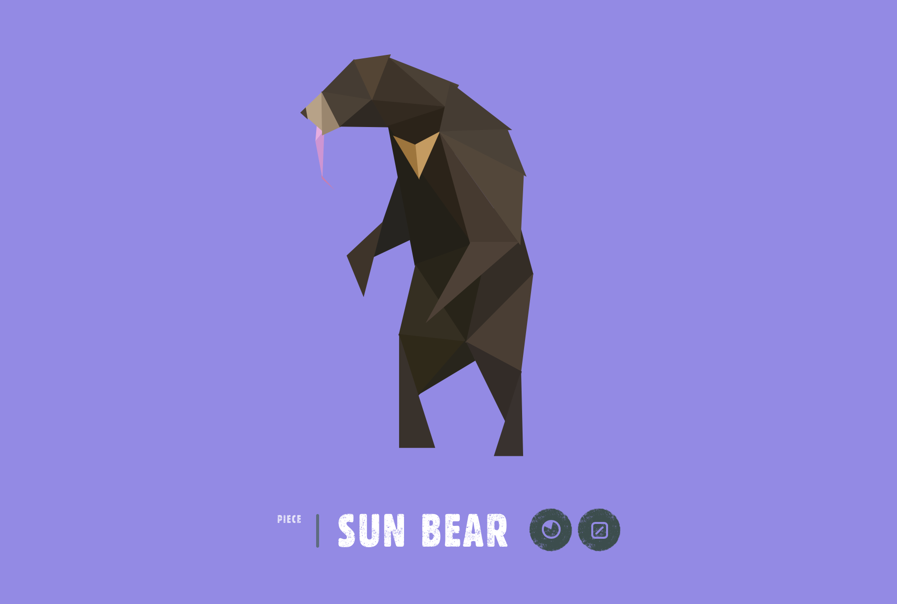

The second good website that I found is Species in Pieces. This company talks about 30 endangered species, why they are endangered, and what we can do to help.
I was very pleased with this website becuase it was also a very interactive website that caught my attention from the home page. When you first enter the website, it brings you to this circle of moving pieces. You have to choose a piece of the circle, or it will randomly choose for you, and then it takes you to an endangered species and you can learn more about the threats of these species and facts. I think it is very interesting that the website is called species in pieces because when you click on the icons on the website, it turns that icon into pieces which makes this website have a very consistent theme throughout.
The coding for this website was very clean and easy to read. They are using HTML5 elements but they do not have tables in their website. When you scroll on this website it takes you to a new species.
The navigation for this website is very easy and interactive like I mentioned in the beginning because the navigation is the different species in the circle on the home page. Once you leave the home page, you just scroll and it takes you to a different page with a different species on it.
The colors of this website vary but stay consistent because they are all pastel colors and very subtle. They don't use very specific colors cause each specie page has a differnt color. I think using pastel colors makes the website seem very soft in a way which is good becuase they are trying to bring light to a hard topic so these colors help set the tone of the website.
I really enjoy the interactions on this website and each individual page within the website. The navigation on each page is neat as well becuase they are icons filled with interesting facts about each specie when clicked on. What sets this website apart from the others is that it really lives up to its name on their website when they make the icons go to pieces after being clicked on. Once you have read all about the specific species, the pieces come back together. This website also has a lot of open space, focusing only on the main topic which would be the species.
Click here to find out more about Species in Pieces and what you can do to help! Species in Pieces.